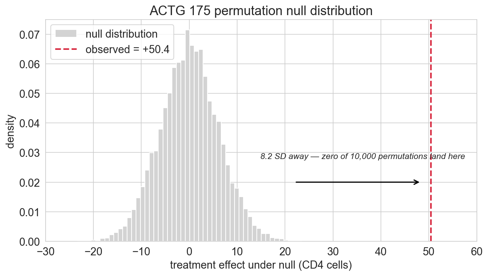
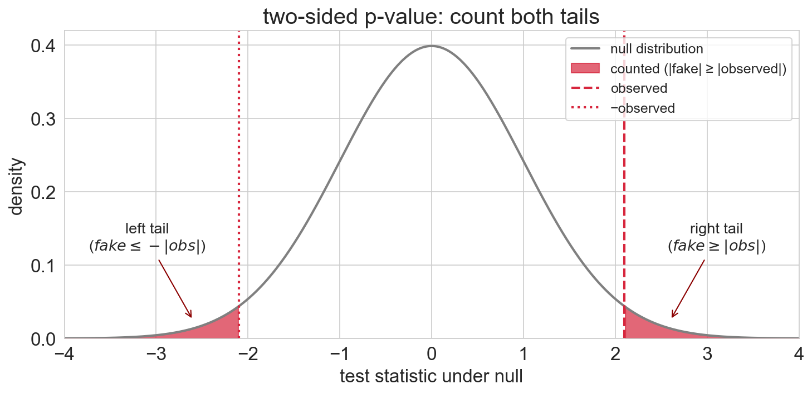
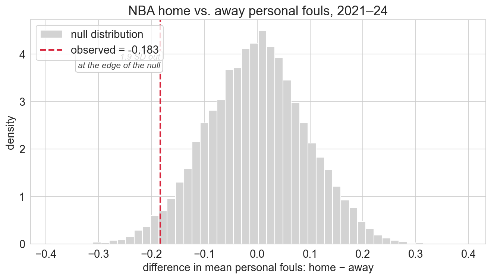
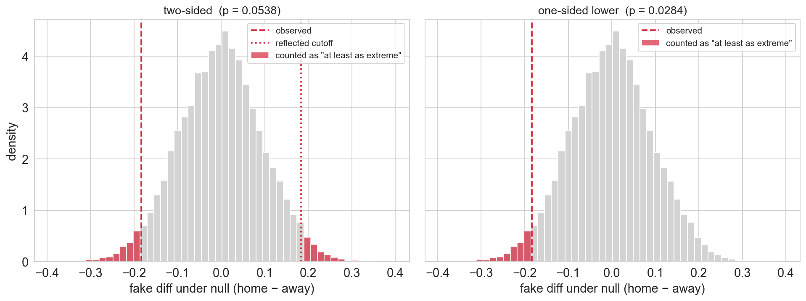

Lecture 9: Permutation Tests
MSE 125 — Applied Statistics
Monday, April 27, 2026
the bootstrap says the drug works
but a skeptic asks: how surprised should we be if the drug did nothing at all?
logistics
- HW 2 review sessions: this week
- project meeting with CA: before May 1; sign up! https://stanford-mse-125.github.io/web/project
- quiz 4: Wed Apr 29 — bootstrap + permutation tests (Lec 8-9)
- project proposal: due Fri May 1
- HW 3: due Fri May 8
today
- permutation tests: shuffle labels to simulate “no effect”
- the null distribution: 10,000 permutations map out what chance looks like
- the p-value: how surprised should we be?
- second example: do NBA refs favor the home team? — association vs causation
- one-sided vs two-sided tests — and why the default is two-sided
- CI / test duality: bootstrap and permutation agree
The Lady Tasting Tea — your turn
Rothamsted, 1920s. Muriel Bristol (algae researcher) claims she can taste whether milk went into the cup before or after the tea.
R.A. Fisher’s test: 8 cups, 4 of each kind, in random order — Bristol picks out the 4 “milk first” cups.
your turn. on scrap paper, write M or T for each of positions 1–8. Pick 4 of each — make your best guess at the sequence.
…and the actual sequence:
M · T · M · M · T · T · T · M
show of hands: who got all 4 milk-firsts right?
\(\binom{8}{4} = 70\) arrangements → pure guessing hits the right answer 1 in 70 (~1.4%)
with ~120 of us guessing, we’d expect 1 or 2 winners by luck alone
Bristol got all eight right. that is not luck — it’s a permutation test in miniature.
Fisher (1935) The Design of Experiments; Salsburg (2001) The Lady Tasting Tea.
if the drug does nothing, labels don’t matter
ACTG 175 — where we left off
bootstrap 95% CI: [39.6, 61.3] — CI excludes 0, so at the 5% level, the effect is real
so why do a hypothesis test?
- history. p-values (Fisher, 1925) came first; CIs (Neyman, 1937) are the inversion of a test
- generality. tests extend where CIs don’t — counts, orderings, whole distributions (the Lady Tasting Tea)
- language. reject, α, p-value — how science reports evidence
the key insight
if the drug has no effect, each patient’s CD4 change is determined by the patient — not by the treatment label
treatment labels are meaningless
so shuffling them should produce results that look like the real data
but if our observed effect is way larger than anything shuffling produces — the drug works
the observed treatment effect is +50.4 CD4 cells
if the drug truly has no effect, and we randomly shuffle who is labeled “treatment” vs “control” — what difference in means do you expect?
- A. still about +50
- B. close to 0
- C. could be anything — no way to tell
- D. exactly 0
- commit to A, B, C, or D
- defend to a neighbor
- debrief
five shuffles
Permutation 1: fake effect = +3.2 CD4 cells
Permutation 2: fake effect = -1.8 CD4 cells
Permutation 3: fake effect = +0.5 CD4 cells
Permutation 4: fake effect = -4.1 CD4 cells
Permutation 5: fake effect = +2.7 CD4 cellsfake effects bounce around zero — observed effect was +50.4
five shuffles, generalized — the recipe
- combine all CD4 changes into one pool (ignore labels)
- randomly assign \(n_C\) to “control,” the remaining \(n_T\) to “treatment”
- compute the test statistic on the fake groups
- repeat many times
- compare the observed effect to the distribution of fake effects
steps 1-4 build the null distribution
step 5 asks: how extreme is our result?
now we need vocabulary
null hypothesis
the default claim a test tries to disprove — here, “the drug has no effect on CD4 count”
test statistic
the number we compute from the data to measure the effect — here, difference in group means
the permutation test — definition
permutation test
a hypothesis test that builds the null distribution by shuffling group labels and recomputing the test statistic
null distribution
the distribution of the test statistic when the null hypothesis is true
key assumption: labels are exchangeable under the null
from the null hypothesis to the null distribution
- null hypothesis — a claim about the world: “the drug has no effect”
- null distribution — the distribution of the test statistic if that claim were true
the permutation test builds the second from the first — by shuffling
why does shuffling simulate from the null distribution?
patients in ACTG 175 were randomly assigned to treatment groups
exchangeability: swapping labels does not change the joint distribution of the data under the null
random assignment guarantees exchangeability:
if the drug has no effect, outcomes don’t depend on labels, so shuffled data is just as plausible as the original
building the null distribution
Null distribution summary:
Mean: +0.01
SD: 5.94
Min: -22.40
Max: +21.70tightly centered around zero — SD is about 6 cells
our observed effect of 50 cells is roughly \(50 / 6 \approx\) 8 SD away
the null distribution — visualized
where do you expect the observed +50.4 to land?

not even close to what random shuffling produces
the p-value
p-value
the probability of observing a result at least as extreme as what you got, assuming the null hypothesis is true
the p-value answers: if there were truly no effect, how often would we see something this extreme?
computing the p-value
two-sided: count permutations where \(|\text{fake effect}| \geq |\text{observed effect}|\) — extreme in either direction

Permutations with |effect| >= |50.4|: 0
p-value: 0.0001overwhelming evidence
ACTG 175: \(p \approx 10^{-4}\) — the observed effect lives in a place the null never visits
hold onto this number — we’ll revisit what “overwhelming” feels like once we see data where the evidence is much thinner
what the p-value is
a probability statement about the data, given the null
- conditions on the null — if no effect, the data would be unlikely
- continuous evidence, not a verdict — \(p \approx 10^{-4}\) far stronger than \(p \approx 0.04\)
- observed data only — replication, mechanism, priors not in the formula
a skeptic says: “a p-value of 0.0001 means there’s only a 0.01% chance the drug doesn’t work”
is the skeptic right?
share your reasoning with a neighbor before we debrief
(hint: what does the p-value condition on?)
- think and jot
- pair and compare
- debrief
three traps
- NOT the probability \(H_0\) is true — the skeptic’s flipped conditional
- NOT the probability the result will replicate
- p = 0.049 and p = 0.051 are not meaningfully different — the 0.05 threshold is a convention
a p-value is a continuous measure of evidence, not a binary verdict
do refs favor the home team?
folk hypothesis: home teams get called for fewer fouls
same machinery, different interpretation
NBA personal fouls — the data
# player-level logs -> team-game foul totals
team_game = (logs.groupby(['GAME_ID', 'TEAM_ABBREVIATION', 'MATCHUP'],
as_index=False)['PF'].sum())
team_game['home'] = team_game['MATCHUP'].str.contains('vs.')
home_pf = team_game[team_game['home']]['PF'].values
away_pf = team_game[~team_game['home']]['PF'].values
obs_diff_nba = home_pf.mean() - away_pf.mean()home: 19.36 fouls per game (n = 3,690 team-games)
away: 19.54 fouls per game (n = 3,690)
observed gap: -0.18 fouls per gamesame null, different interpretation
key difference from ACTG 175: no random assignment here
teams play each opponent home and away — schedule is fixed, not randomized
ACTG 175: “the drug has no effect” — labels exchangeable by random assignment
NBA: “home and away foul counts come from the same distribution”
same null, same permutation mechanics (shuffle labels, recompute)
but rejecting the null only tells us the groups differ — not why
suppose the permutation test finds home teams are called for fewer fouls
can we conclude refs are biased?
name at least three alternative mechanisms, confounded with the home/away label, that could produce the same gap
- think-pair-share
- debrief: collect explanations on the board
NBA permutation — shuffle labels, recompute
permutation p-value (two-sided): 0.0539NBA fouls — null distribution

observed gap sits at the edge of the null — not outside it
NBA: ~540 / 10,000 permutations at least as extreme
ACTG: 0 / 10,000marginal evidence — contrast with ACTG’s \(p \approx 10^{-4}\)
what if the question were narrower?
“home teams get called for fewer fouls”
not “they get called for different fouls”
one-sided vs two-sided
two-sided vs one-sided tests
two-sided — count fake effects at least as extreme as \(|\text{obs}|\) in either direction
one-sided — count only one tail (direction chosen in advance)
when the null distribution is symmetric and continuous: two-sided p ≈ 2 × one-sided p (equality is approximate — Monte Carlo noise and discrete atoms at \(\pm|\text{obs}|\))
the verdict flips
same data. same null distribution. same observed statistic.
Two-sided p-value: 0.0539 → FAIL to reject at α = 0.05
One-sided p-value: 0.0288 → REJECT at α = 0.05the analytic choice — not the data — drives the conclusion
this is exactly why direction must be chosen before seeing the data
why? one-sided counts half the tail → half the p-value → crosses \(\alpha = 0.05\)
tail-counting — one tail or two?

prefer two-sided by default
if you’re not sure, use two-sided — the honest default
a one-sided test is justified only when:
- effects in the other direction are logically impossible or irrelevant
- the direction was chosen before seeing the data
picking the tail post-hoc = effectively running two one-sided tests, each at \(\alpha = 0.05\)
the rate of falsely rejecting a true null jumps from \(\alpha = 0.05\) to \(\approx 0.10\)
Ch 10 formalizes this as the Type I error rate.
a high-profile example: Deflategate
Deflategate — a one-sided story
halftime, 2015 AFC Championship. officials measure the game balls.
Patriots’ balls: below the legal minimum. Colts’ balls: fine.
cooling explains some drop — same field, same weather, same physics.
so why did the Pats drop more?
the accusation was directional: Pats dropped more than Colts.
a Pats ball that dropped less → exoneration, not cheating.
only one direction counts as damaging → one-sided test
for each scenario, state the null in plain language and pick one-sided or two-sided
- factory ships widgets under a contract specifying a minimum mean weight; heavy shipments just give the buyer extra; weekly test checks compliance
- school district piloted a new math curriculum last year; deciding whether to keep, roll back, or revise — does the null say “doesn’t change scores” or “doesn’t increase scores”?
- biotech is running a trial of a new cholesterol drug; the team hopes it lowers LDL
- think and jot — null first, then one-sided / two-sided
- pair and compare
- debrief: share answers, spot the trap
your bootstrap 95% CI for a treatment effect is [15, 85] — it excludes zero
without computing anything, do you expect the permutation p-value to be above or below 0.05?
why?
- predict and write down your reasoning
- compare with a neighbor
the CI / hypothesis test duality
CI / test duality
a 95% CI excluding 0 \(\Leftrightarrow\) reject \(H_0{:}\;\text{effect}=0\) at \(\alpha = 0.05\)
the correspondence holds for any confidence level: 99% CI \(\leftrightarrow\) \(\alpha = 0.01\)
exact for parametric pairs (normal-approx CI ↔︎ z-test)
near-exact for simulation-based pairs (bootstrap ↔︎ permutation) — any gap is Monte Carlo error
the CI gives more information — a range of plausible values, not just whether zero is among them
bootstrap vs permutation — when to use which
| bootstrap | permutation test | |
|---|---|---|
| question | how precise is my estimate? | is the effect real? |
| produces | confidence interval | p-value |
| null hypothesis | not needed | required |
| key assumption | i.i.d. samples in each group | exchangeability under null |
| best for | any statistic | comparing groups |
| resampling | with replacement, within each group | without replacement, shuffling across groups |
i.i.d. = independent and identically distributed
both are simulation-based inference: the computer builds the reference distribution; no normality or closed-form formula needed
bootstrap = precision \(\quad\) permutation = significance \(\quad\) use both
A/B testing — same idea, different name
in data analytics, the permutation test between two groups is called A/B testing
- A = control \(\quad\) B = treatment
- used at every tech company: feature rollouts, pricing, ad copy, UX tweaks
the machinery is exactly what we just ran — shuffle labels, recompute, compare
summary
- shuffle → null distribution → p-value — the recipe
- small p-value \(\neq\) small probability the null is true — the #1 misconception
- report the number — \(p \approx 10^{-4}\) (ACTG) and \(p \approx 0.05\) (NBA) are different verdicts, not the same “significant”
one recipe — 8 cups of tea, 2,139 clinical patients, 7,000 NBA games
next time
we have the p-value — but what threshold should we use?
- Ch 10: formal hypothesis-testing framework — \(H_0\), \(H_1\), \(\alpha\), Type I/II errors, power
- Ch 11: what happens when you run many tests?
- Ch 18: when a test can license causal claims — designing for causation
one-minute feedback
- what was the most useful thing you learned today?
- what was the most confusing?
- submit before you leave